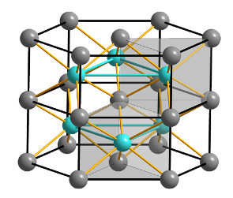

1.1. Introduction to Linear Systems#
One equation for one unknown#
The simplest example of a linear system is of only one equation and one unknown. An important step in solving systems of equations will be solving a single equation. For example, suppose we are asked to solve
Clearly the solution is \(x = 3\).
In general if \(a\) and \(b\) are two given numbers, we might be asked to find the values of \(x\) for which
is satisfied. There are three cases.
The three possible outcomes when solving \(ax = b\) (equation (2.1)) are:
If \(a \ne 0\) then we can divide (1.1) by \(a\) to give \(x = b/a\). This is the only value of \(x\) that satisfies (1.1) and there is a unique solution.
If \(a = 0\) and \(b \ne 0\), (1.1) is not satisfied for any value of \(x\) — no numbers \(x\) satisfy \(0\cdot x = b \ne 0\). Hence there is no solution to (1.1).
If \(a = 0\) and \(b = 0\), then any value of \(x\) satisfies (1.1) because \(0 \cdot x = 0\) for any number \(x\). Hence there are infinitely many solutions to (1.1).
We will return to this situation time and time again.
A 2 x 2 system (2 equations in 2 unknowns)#
Example 1.1 (System of two equations)
for the unknowns \(x_1\) and \(x_2\).
There are many ways to solve this simple system of equations — we describe one that is easily generalised to much larger systems of linear equations.
Step 1
Eliminate \(x_1\) from (1.3) by replacing
to give
Step 2
Solve (1.5) (this is straightforward, divide both sides by 2). This gives
Note
(1.5) is a “\(1\times1\) system”, as in (1.1).
Step 3
Subsistute the result from Step 2 back into (1.4). This gives
The solution to equations (1.2) and (1.3) is therefore
Example 1.2
Solve the \(2\times2\) linear system
Solution
\(x_1 = 2\), \(x_2 = -1\). Check
Numerical solution in Python#
Looking ahead, we will see how to solve linear systems using the Python programming language.
import matplotlib.pyplot as plt
# INPUT EQUATION 3x + 4y = 2
a = 3
b = 4
u = 2
# INPUT EQUATION x + 2y = 0
c = 1
d = 2
v = 0
# CALCULATE SOLUTION
x = (d*u - b*v)/(a*d - b*c)
y = (a*v - c*u)/(a*d - b*c)
print('Solution: x =', x, ', y =', y)
# Set Range for plotting
x_points = [0, 4]
# ............. Plot First equation (blue)
y_points = [(u - a*x)/b for x in x_points]
plt.plot(x_points, y_points, '-')
# .......... Plot Second equation (orange)
y_points = [(v - c*x)/d for x in x_points]
plt.plot(x_points, y_points, '-')
# .................. Plot Solution (green)
plt.plot(x, y, 'o')
# ............................. Label axes
plt.xlabel('$x$')
plt.ylabel('$y$', rotation = 0);
plt.legend(['Equation 1', 'Equation 2', 'Solution']);
Solution: x = 2.0 , y = -1.0
Example 1.3
An industrial batch process is manufacturing Iron Sulphide (FeS) in 75 kg batches. A mixture of sulphur powder and iron filings is heated to manufacture the target product. A fault has developed in the plant which has led to an incomplete reaction.

The specification of the target mixture is that it is a total of 75 kg with 36.4% sulphur powder and 63.6% iron filings
As a result of some of the sulphur vapourising we have a waste mixture that is 32.7% sulphur and 67.3% iron filings
We have available a sulphur-rich mixture that is 83.4% sulphur powder and 16.6% iron filings
Question
How much of the waste mixture and of the sulphur-rich mixture do we need in order to make 75 kg at the specified target ratio?
Solution
We require 69.5 kg of the waste mixture and 5.5,kg of the sulphur-rich mixture.